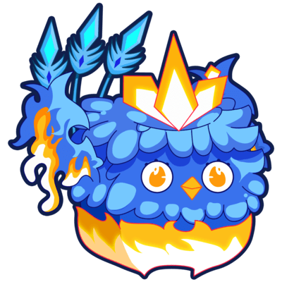

Buah di Blox Fruit
.jpeg)
Magma Fruit
Buah Magma di Blox Fruit adalah buah yang memungkinkan pengguna memanipulasi dan menjadi magma. Buah ini menghasilkan serangan dengan damage tinggi, khususnya untuk area serangan luas dan jarak jauh. Kekuatan magma juga memberikan efek pembakaran pada musuh, menjadikannya sangat mematikan dalam pertarungan.Light Fruit
Buah Light di Blox Fruit memungkinkan pengguna mengendalikan cahaya, menyerang dengan serangan jarak jauh yang kuat, dan bergerak cepat dan memiliki kekebalan terhadap serangan fisik biasa.Dragon Fruit
Buah Dragon di Blox Fruit memberikan pengguna kemampuan untuk berubah menjadi naga dan mengendalikan kekuatan naga. Serangannya memiliki damage tinggi dan dapat menyebabkan efek knockback pada musuh. Selain itu, pengguna dapat meluncurkan bola api dan terbang, menjadikannya sangat kuat dalam pertarungan.

Phoenix Fruit
Buah Phoenix di Blox Fruit memungkinkan pengguna mengendalikan api dan memiliki kemampuan penyembuhan. Pengguna dapat terbang, menyerang dengan serangan api, dan bangkit kembali setelah mati.
Quake Fruit
Quake adalah Devil Fruit yang memungkinkan penggunanya menciptakan gempa bumi dan gelombang kejut untuk menyerang musuh dengan kerusakan area yang luas.
Rumble Fruit
Rumble adalah Devil Fruit yang memungkinkan penggunanya untuk mengendalikan petir dan menciptakan serangan berbasis listrik. Dengan kekuatan ini, pengguna dapat meluncurkan serangan jarak jauh, memberikan kerusakan tinggi kepada musuh, serta memiliki kemampuan untuk meningkatkan kecepatan dan mobilitas dalam pertarungan.
Dark Fruit
Dark adalah Devil Fruit yang memungkinkan penggunanya untuk mengendalikan kegelapan dan menciptakan serangan berbasis energi gelap. Dengan kekuatan ini, pengguna dapat menyerang musuh dengan serangan yang merusak dan memiliki kemampuan untuk menghisap kesehatan musuh, serta memberikan efek status yang mengurangi kemampuan musuh dalam bertarung.Sand Fruit
Sand adalah Devil Fruit yang memungkinkan penggunanya untuk mengendalikan pasir dan menciptakan serangan berbasis pasir. Dengan kekuatan ini, pengguna dapat menyerang musuh dengan serangan jarak jauh, mengubur mereka dalam pasir, serta mengontrol medan tempur dengan menciptakan badai pasir dan jebakan.Venom Fruit
Venom adalah Devil Fruit yang memungkinkan penggunanya untuk menghasilkan racun berbahaya. Dengan kekuatan ini, pengguna dapat menyerang musuh dengan serangan berbasis racun yang dapat memberikan efek keracunan, mengurangi kesehatan, dan memperlambat gerakan musuh. Selain itu, pengguna memiliki kemampuan untuk meningkatkan serangan fisik dan daya tahan tubuh.KITSUNE Fruit
Kitsune adalah Devil Fruit yang memungkinkan penggunanya untuk mengendalikan ilusi dan memiliki kemampuan berbasis api. Dengan kekuatan ini, pengguna dapat menciptakan ilusi untuk membingungkan musuh, serta meluncurkan serangan berbasis api yang merusak. Kekuatan ini juga memberikan pengguna kemampuan untuk meningkatkan kecepatan dan kelincahan dalam pertarungan.T-Rex Fruit
T-Rex adalah Devil Fruit yang memberikan penggunanya kekuatan untuk berubah menjadi dinosaur T-Rex. Dengan kekuatan ini, pengguna memiliki peningkatan kekuatan fisik, ketahanan, dan kemampuan untuk menyerang musuh dengan serangan yang menghancurkan menggunakan cakar dan gigi tajamnya. Selain itu, pengguna dapat memanfaatkan ukuran besar dan kekuatan brute untuk mendominasi medan tempur.Senjata di Blox Fruit
Saber
Dark Blade
Shisui
Wando
Bisento
Pole (1st Form)
Canvander
True Triple Katana
Soul Cane
Midnight Blade